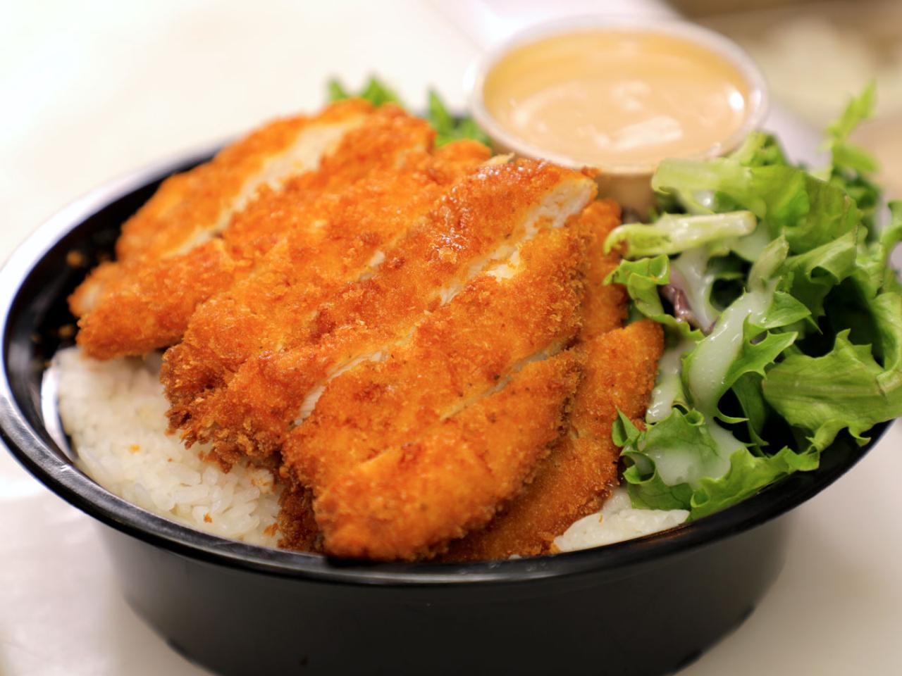

Chicken Katsu Recipe

Katsu is a Japanese dish of crispy fried cutlets coated with Panko bread crumbs. Popular varieties are chicken katsu (like this recipe) and tonkatsu (which is made with pork).
Ingredients
- Chicken
- Seasonings
- Flour
- Egg
- Panko
- Oil
Steps
- Season chicken breasts on both sides with salt and pepper. Place flour, beaten egg, and panko crumbs into separate shallow dishes. Coat chicken breasts in flour, shaking off any excess; dip into egg, and then press into panko crumbs until well coated on both sides.
- Heat oil in a large skillet over medium-high heat. Place chicken in the hot oil, and fry until golden brown, 3 or 4 minutes per side. Transfer to a paper towel-lined plate to drain.